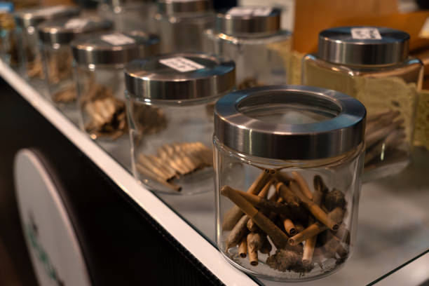
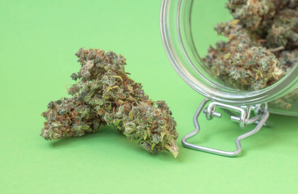

News
Medical Benefits of Cannabis in Florida
Legalization and Regulation of Cannabis in Florida
Impact on Public Health and Safety in Florida
About Us
Cannabis News Florida
What is the current status of cannabis research studies in Florida?
Jun 18, 2024
As of now, cannabis research studies in Florida are steadily growing and expanding.. With the legalization of medical marijuana in 2016, there has been a surge of interest and funding in researching the potential benefits and risks associated with cannabis use.
Numerous universities and research institutions in Florida have begun conducting studies on various aspects of cannabis, including its effects on different medical conditions such as chronic pain, epilepsy, PTSD, and cancer.
What is the impact of cannabis legalization on research in Florida?
Jun 18, 2024
The legalization of cannabis in Florida has had a significant impact on research in the state.. With the passing of Amendment 2 in 2016, which legalized medical marijuana for qualifying patients, there has been a surge in interest and investment in cannabis research.
One of the most notable effects of legalization on research is the increase in funding opportunities.
What is the focus of ongoing cannabis studies in Florida?
Jun 18, 2024
Cannabis studies in Florida are currently focused on a variety of key areas, reflecting the growing interest and investment in this field.. One of the main focuses is on the medical benefits of cannabis, particularly in relation to treating various health conditions such as chronic pain, epilepsy, PTSD, and cancer.
Researchers are conducting clinical trials to investigate how different strains and compounds within cannabis can be used to alleviate symptoms and improve quality of life for patients.
What is the potential for medical breakthroughs from cannabis research in Florida?
Jun 18, 2024
The potential for medical breakthroughs from cannabis research in Florida is truly promising.. With the increasing legalization of medical marijuana in the state, researchers are now able to conduct more in-depth studies on the therapeutic benefits of cannabis.
One of the most exciting aspects of cannabis research in Florida is its potential to revolutionize the treatment of various medical conditions.
What is the relationship between state regulations and cannabis research in Florida?
Jun 18, 2024
In Florida, the relationship between state regulations and cannabis research is a complex and ever-evolving one.. As with many states in the US, Florida has been grappling with the issue of cannabis legalization for both medical and recreational purposes.

How to Participate in Cutting-Edge Florida Cannabis Research Studies
Jun 18, 2024
If you're interested in being a part of cutting-edge cannabis research studies in Florida, there are several steps you can take to participate.. These studies offer an opportunity to contribute to the growing body of knowledge about the potential benefits and risks of cannabis use, as well as help shape future policies and regulations.
One way to get involved in cannabis research studies is to keep an eye out for recruitment opportunities.
Discover the Latest Breakthroughs in Cannabis Research in Florida
Jun 18, 2024
As the landscape of cannabis research continues to evolve, Florida has emerged as a key player in uncovering the latest breakthroughs in this rapidly expanding field.. With its progressive approach to medical marijuana legalization and robust scientific community, the Sunshine State is at the forefront of exploring the potential benefits and applications of cannabis.
One of the most exciting developments in cannabis research in Florida is the exploration of its therapeutic properties.
Uncover the Secrets of Cannabis with Florida's Leading Research Studies
Jun 18, 2024
Cannabis, also known as marijuana, has long been a topic of controversy and debate.. While some view it as a harmful drug with negative effects on the mind and body, others see it as a natural remedy for various ailments.

Find Out What Florida's Cannabis Research Studies Can Teach You
Jun 18, 2024
If you're curious about the latest research on cannabis in Florida, you've come to the right place.. The state of Florida has been at the forefront of cannabis research studies, exploring everything from its medical benefits to its potential risks.
One of the most important things we can learn from these studies is how cannabis affects our health.
Join the Journey of Exploration with Florida's Top Cannabis Researchers
Jun 18, 2024
Come along and join us on an exciting journey of exploration with Florida's top cannabis researchers.. Our team is dedicated to uncovering the many benefits and uses of this incredible plant, and we invite you to be a part of our mission.
Cannabis has been used for centuries for its medicinal properties, yet there is still so much we have yet to discover.
The impact of medical cannabis on chronic pain management in Florida
Jun 18, 2024
Chronic pain is a debilitating condition that affects millions of people in Florida and around the world.. For many individuals, traditional pain management methods such as opioid medications or physical therapy may not provide adequate relief.
The effectiveness of cannabis as a treatment for PTSD among Florida residents
Jun 18, 2024
Post-Traumatic Stress Disorder (PTSD) is a debilitating condition that affects many individuals in Florida and across the country.. Those suffering from PTSD often experience symptoms such as flashbacks, nightmares, anxiety, and depression, which can have a significant impact on their daily lives.
Public perception and attitudes towards recreational cannabis legalization in Florida
Jun 18, 2024
Recreational cannabis legalization has been a hot topic of debate in Florida in recent years, and public perception and attitudes towards this issue have been varied.. As with any controversial topic, there are strong opinions on both sides of the argument.
Many Floridians believe that legalizing recreational cannabis could bring about numerous benefits to the state.
The economic implications of the cannabis industry on Florida's economy
Jun 18, 2024
The economic implications of the cannabis industry on Florida's economy are vast and multifaceted.. As the legalization of medical marijuana continues to gain traction in the state, it has become increasingly clear that this budding industry has the potential to significantly impact Florida's economy in a positive way.
One of the most obvious economic benefits of the cannabis industry is job creation.
Cannabis consumption patterns and trends among different demographic groups in Florida
Jun 18, 2024
Cannabis consumption patterns and trends among different demographic groups in Florida are a topic of great interest and importance.. As the legalization of cannabis for medical and recreational use continues to spread across the United States, it is crucial to understand how different demographics are engaging with this plant.
In Florida, where medical cannabis has been legal since 2016, there has been a notable increase in the number of residents using cannabis for medicinal purposes.